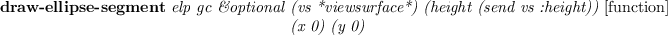
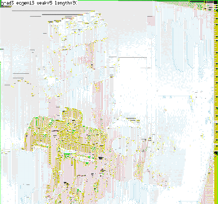
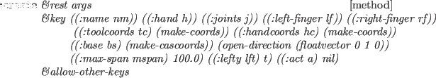
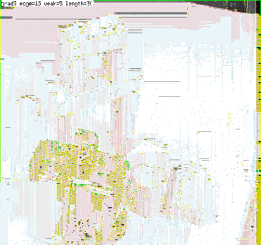

Edge Finding facilities are provided by "vision/edge/edge".

-
- finds edge pixels in this image.
edge1 first applies a gradient operator to every pixel.
There are three kinds of gradient operators provided:
grad3 which takes difference between horizontally and vertically
neighboring pixels,
prewitt and sobel.
method=0,1 selects grad3, 2 selects prewitt and 3 selects
sobel.
Pixels that have edge intensity greater than th1 are identified as
strong edge pixels.
After thinning edges referring to edge intensities and
directions of gradient, isolated edge pixels are marked.
Starting from end points of these strong edges, weak edge pixels
that are consistent with the strong edge's direction are searched for and linked
to compose elongated lines.
Weak edge pixels that have greater edge intensity than th2 are
unconditionally linked.
Even very weak edge pixels that have less edge intensity than th2
can be linked as long as they connect to another weak or strong edge
within run length.
edge1 returns a pixel-image object
each pixel of which represents either a strong edge pixel (=1),
a weak and elongated edge pixel (=2),
or an isolated pixel (=255).
overlay-edge ximg edgeimg [function]
-
-
displays edgeimg obtained by edge1 on top of
x-display-able pixel image ximg.
Strong edge pixels are colored in red, weak pixels in green, and
isolated pixels in blue.
-
- tries to fit straight lines and elliptic curves to the
result obtained by edge1.
A list of three elements, which represents regions, boundaries, and
line segments is returned.
Three elements represented by edge2 are defined as follow.
region [class]
:super propertied-object
:slots contour area intensity std-deviation
-
- represents region.
boundary [class]
:super propertied-object
:slots parent-region hole segments intensity top-left bottom-right length
-
- represents boundary.
edge-segment [class]
:super propertied-object
:slots prev next wing ; the other half-edge intensity std-deviation start end
-
- represents edge-segment.
line-edge-segment [class]
:super edge-segment
:slots la lb
-
- represents line-edge-segment.
curved-edge-segment [class]
:super edge-segment
:slots rotation total-rot side a b c d e
-
- represents curved-edge-segment.

-
- draws curved-edge-segment object elp on xwindow vs.
draw-line-segment s &optional gc (vs *viewsurface*)
(height (send vs :height))
(x 0) (y 0) [function]
-
-
draws line-edge-segment object s on xwindow vs.

-
- draws s, a list of edge-segment objects on xwindow vs.
draw-boundary b &optional gc [function]
-
-
draws segments of boundary object b on xwindow vs.
draw-boundaries bs &optional gc (step nil) [function]
-
-
draws segments of boundary objects bs on xwindow vs.
*red-gc* [variable]
-
- GC whose foreground color is #ff0000
*blue-gc* [variable]
-
- GC whose foreground color is #0000ff
*green-gc* [variable]
-
- GC whose foreground color is #00ff00
*yellow-gc* [variable]
-
- GC whose foreground color is #ffff00
*cyan-gc* [variable]
-
- GC whose foreground color is #00ffff
Figure 14:
Edge Finder and Overlaid Edges
|  |
2016-03-23